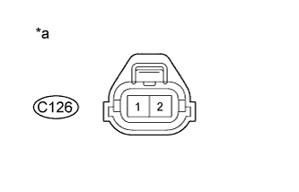

DTC P20CB "Фиксация" цепи управления дополнительной форсунки подачи топлива в выпускную трубу "A" в состоянии открывания |
DTC P20CD Обрыв в цепи управления дополнительной форсунки подачи топлива в выпускную трубу "A" |
DTC P20CE Короткое замыкание в цепи управления дополнительной форсунки подачи топлива в выпускную трубу "A" |
| Режим поездки при обнаружении DTC | Условие обнаружения DTC | Неисправный участок |
| Зажигание включено (IG) в течение 3 с | Когда дополнительная форсунка подачи топлива в выпускную трубу выключена, в течение 3 с уровень выходного сигнала на контакте FIVM1 высокий, а на контакте FIVM2 – низкий. (логика диагностирования за 1 поездку) |
|
| Режим поездки при обнаружении DTC | Условие обнаружения DTC | Неисправный участок |
| Зажигание включено (IG) в течение 1 с | Когда дополнительная форсунка подачи топлива в выпускную трубу выключена, в течение 0,16 с уровень выходного сигнала на обоих контактах FIVM1 и FIVM2 высокий. (логика диагностирования за 1 поездку) |
|
| Режим поездки при обнаружении DTC | Условие обнаружения DTC | Неисправный участок |
| Совершите поездку длительностью 20 мин (температура отработавших газов не ниже 250°C (482°F)). | Когда дополнительная форсунка подачи топлива в выпускную трубу включена, на протяжении 7 включений уровень выходного сигнала на обоих контактах FIVM1 и FIVM2 низкий. (логика диагностирования за 1 поездку) |
|
| 1.ПРОВЕРЬТЕ ДОПОЛНИТЕЛЬНУЮ ФОРСУНКУ ПОДАЧИ ТОПЛИВА В ВЫПУСКНУЮ ТРУБУ В СБОРЕ (СОПРОТИВЛЕНИЕ) |
Проверьте дополнительную форсунку подачи топлива в выпускную трубу в сборе (Нажмите здесь).
|
| ||||
| OK | |
| 2.ПРОВЕРЬТЕ НАПРЯЖЕНИЕ НА КОНТАКТЕ (ПИТАНИЕ) |
|  |
Отсоедините разъем дополнительной форсунки подачи топлива в выпускную трубу.
Измерьте напряжение в соответствии со значениями, приведенными в таблице.
| Контакты для подключения диагностического прибора | Положение переключателя | Заданные условия |
| C126-2 - масса | Зажигание включено (IG) | 11-14 В |
| *a | Вид спереди разъема со стороны жгута проводов: (к дополнительной форсунке подачи топлива в выпускную трубу в сборе) |
Подсоедините разъем дополнительной форсунки подачи топлива в выпускную трубу.
|
| ||||
| OK | |
| 3.ПРОВЕРЬТЕ ЖГУТ ПРОВОДОВ И РАЗЪЕМ (ДОПОЛНИТЕЛЬНАЯ ФОРСУНКА ПОДАЧИ ТОПЛИВА В ВЫПУСКНУЮ ТРУБУ В СБОРЕ – ЕСМ) |
Отсоедините разъем дополнительной форсунки подачи топлива в выпускную трубу.
Отсоедините разъем ECM.
Измерьте сопротивление в соответствии со значениями, приведенными в таблице ниже.
| Контакты для подключения диагностического прибора | Условие | Заданные условия |
| C126-1 - C93-5 (FIV) | Всегда | Менее 1 Ом |
| Контакты для подключения диагностического прибора | Условие | Заданные условия |
| C126-1 или C93-5 (FIV) - масса | Всегда | 10 кОм или более |
Подсоедините разъем дополнительной форсунки подачи топлива в выпускную трубу.
Подсоедините разъем ECM.
|
| ||||
| OK | |
| 4.ЗАМЕНИТЕ ECM |
Замените ECM (Нажмите здесь).
|
| ||||
| 5.ЗАМЕНИТЕ ДОПОЛНИТЕЛЬНУЮ ФОРСУНКУ ПОДАЧИ ТОПЛИВА В ВЫПУСКНУЮ ТРУБУ |
Замените дополнительную форсунку подачи топлива в выпускную трубу в сборе (Нажмите здесь).
|
| ||||
| 6.ОТРЕМОНТИРУЙТЕ ИЛИ ЗАМЕНИТЕ ЖГУТ ПРОВОДОВ ИЛИ РАЗЪЕМ |
Отремонтируйте или замените жгут проводов или разъем.
| ДАЛЕЕ | |
| 7.ПРОВЕРЬТЕ, УСТРАНЕНА ЛИ ДОЛЖНЫМ ОБРАЗОМ НЕИСПРАВНОСТЬ |
Подсоедините портативный диагностический прибор к DLC3.
Сбросьте коды DTC (Нажмите здесь).
Совершите поездку длительностью 20 мин.
Войдите в следующие меню: Powertrain / Engine and ECT / DTC.
Убедитесь, что DTC не выводится снова.
| ДАЛЕЕ | ||
| ||